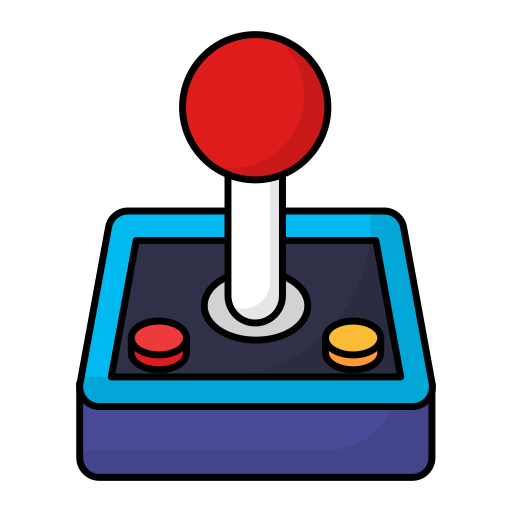
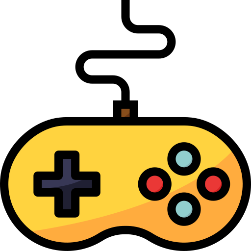

Consoles
Conheça os consoles que marcaram gerações e descubra as plataformas que estão levando os jogos ainda mais longe.

Na imagem ilustrada, o objeto representado é o controle de videogame, também chamado de joystick ou gamepad. Ele é o principal meio de interação entre o jogador e o jogo. Os primeiros jogos eletrônicos surgiram por volta da década de 1950, mas o mercado só explodiu nos anos 70 e 80 com o Atari e o Nintendo. Hoje os games são uma das maiores indústrias do entretenimento do mundo, com milhões de jogadores em consoles, computadores e celulares.
Reflexos rápidos e muita adrenalina.
Desafios que exigem raciocínio.
Velocidade e disputa na pista.
Aventuras e personagens que evoluem.
Tem uma dica de jogo ou quer compartilhar sua paixão pelo universo gamer? Entre em contato com a gente!
Fale conoscoBairro: Bela Vista
Cidade: Porto União - SC
CEP: 89400-000
Estamos na região de Porto União, em Santa Catarina. Consulte o mapa para localizar o bairro.
Entre os gêneros mais conhecidos estão ação, aventura, corrida, puzzle e RPG. Cada um oferece desafios e experiências diferentes.
Consoles são dispositivos feitos especialmente para jogos e costumam ser simples de configurar. No computador, é possível personalizar mais os componentes e as configurações dos jogos.
Não necessariamente. Muitos jogos podem ser aproveitados offline, mas partidas online e alguns recursos podem exigir uma conexão com a internet.
Pense no tipo de experiência que você gosta: ação e competição, histórias e exploração, desafios de raciocínio ou corridas. Também vale conferir a classificação indicativa do jogo.